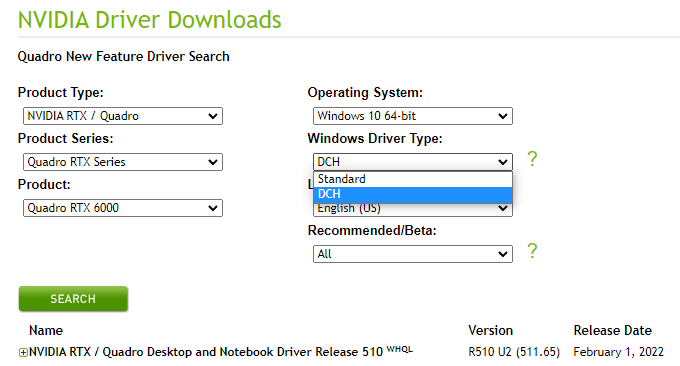

25 May 2022
MtoA 5.1.2 uses Arnold 7.1.1.1 and is a minor feature release, introducing support for MayaUSD 0.18.0.
Maya 2020, 2022 or 2023
Windows 10 or later, with the Visual Studio 2019 redistributable.
Linux with at least glibc 2.17 and libstdc++ 4.8.5 (gcc 4.8.5). This is equivalent to RHEL/CentOS 7.
macOS 10.13 or later .
CPUs need to support the SSE4.1 instruction set. Apple Mac models with M series chips are supported under Rosetta 2 mode.
GPU rendering works on Windows and Linux only and requires an NVIDIA GPU of the Ampere, Turing, Volta, Pascal, or Maxwell architecture.
Optix™ denoiser requires an NVidia GPU with CUDA™ Compute Capability 5.0 and above.
We recommend using the 511.09 (Quadro), 511.09 (GeForce) , or higher on Windows and 495.46 or higher drivers on Linux . See Arnold GPU for more information.

The cache will also need to be re-populated after installing a new Arnold version, updating to a new NVIDIA driver , or changing the hardware configuration of GPUs on the system. More information can be found here .
MtoA 5.1.2 works with the following Maya plugins